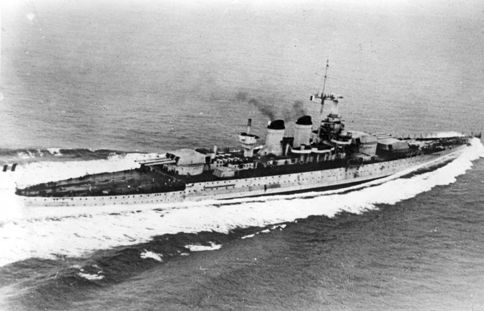

Littorio / Italia
Acorazado de Italia, perteneciente a la clase Littorio. Participó en operaciones italianas contra convoyes y sufrió daños en el ataque británico contra Tarento.

Diseño y función
Littorio / Italia pertenecía a la clase Littorio. Combate de flota e intervención contra convoyes. Sus prestaciones se detallan en la tabla técnica, con las fechas o condiciones disponibles en la referencia.
Operaciones y trayectoria
Participó en operaciones italianas contra convoyes y sufrió daños en el ataque británico contra Tarento. En julio de 1943 cambió su nombre por Italia.
Destino final y conservación
Tras el armisticio italiano quedó internado bajo control aliado y fue desguazado en la posguerra.